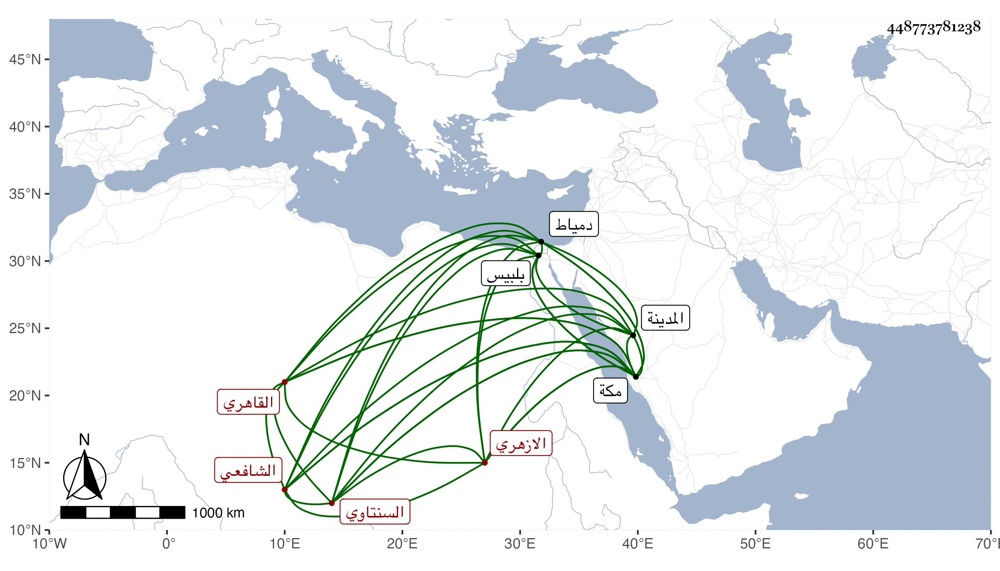

0902Sakhawi.DawLamic.ITO20230111-ara1.EIS1600.448773781238
Biography ID: 448773781238
337
عبد الرحمن بن محمد بن حجي بن فضل الزين السنتاوي ثم القاهري الازهري الشافعي والد محمد الآتي ويعرف بالسنتاوي . ولد في سنة سبع وعشرين وثمانمائة وحفظ القرآن ببلبيس والمنهاج الفرعي والأصلي وألفية النحو والحديث والشافية لابن الحاجب وقطعا من مختصرات كالخزرجية ولازم الشهاب الزواوي حتى كان جل انتفاعه به وأخذ عن القاياتي في الفقه وفي المعاني والبيان وغيرها وعن الجلال المحلي في الفقه وأصوله وغير ذلك وعن المناوي والعبادي في الفقه وأذنا له في الافتاء والتدريس ، وكذا انتفع بالكافياجي والشرواني في فنون وبالزين طاهر في النحو والأصول وبالعلاء الرومي الحصني في الأصول والمعاني والبيان وغيرهما وبأبي الجود في الفرائض والحساب وأكثر عن الزيني زكريا بل رافقه وغيره في الأخذ عن شيخنا في الرواية حتى سمع عليه غالب ابن ماجه وبعض البخاري وأشياء وفي الدراية وكذا سمع على القاياتي والزين رضوان والعلاء القلقشندي والمناوي وابن الديري وتردد لدروسه أيضا وختم البخاري في الظاهرية وطائفة ، وتلقن الذكر من الشيخ مدين وصحب الغمري وبرع وصاهر المحيوي الدماطي على ابنته واستولدها ولده المشار إليه وأثكله فصبر كل ذلك مع سلوك طريق الاستقامة والتواضع والسكون والعقل وتصدى للاقراء فأخذ عن الفضلاء وقرأ عليه الكمالي بن ناظر الجيش فارتفق به كما ارتفق باسكان يعقوب شاه المهمندار له بالبيت الذي أنشأه علو المسجد الذي جدده بجوار بيته وحج مرتين وجاور بعد ذلك سنة وكان توجه لها صحبة الكمالي المشار إليه وبرز معه من مكة فجاور في المدينة مديدة وكان يقرأ عليه ورجعا فلم يلبث أن مات واستمر صاحب الترجمة بمكة بقية السنة وأقرأ الطلبة هناك وولي مشيخة الجوهرية المعينية بغيط العدة وقراءة الحديث بالتربة الأشرفية قايتباي بعد ابن الشهاب السجيني ودرسا بالبردبكية وغير ذلك ، وعرض عليه صاحبه الزين زكريا قضاء دمياط بعد موت الصلاح بن كميل فقبله يوما واحدا ثم ترك وعوضه الله باستقراره في مشيخة سعيد السعداء بعد الجمال عبد الله الكوراني بعد سعي جماعة كثيرين فيها حتى بالذهب من بعضهم وصار يطلع للتهنئة مع المشايخ وربما أنكر عليه جلوسه فوق من هو أعلى ، ولكن طمحت نفسه إلى أعلى ، وسمعت أنه كتب على كل من الزبد للبارزي وألفية ابن مالك واليوسفية شرحا وأنه كتب على أسئلة السيد عبيد الله بن عفيف الدين الفقهية بل هو ممن أفتى في مسئلتي ابن الفارض وليس في الامكان ، وسمعت من يستحسن كتابته ونعم الرجل . مات في سحر يوم الاثنين ثاني المحرم سنة ست وتسعين وصلى عليه في اليوم المذكور بالازهر بعد صلاة الظهر في مشهد حافل تقدم الناس الشافعي وشهد هو والاستادار وجماعة دفنه رحمه الله وإيانا .
